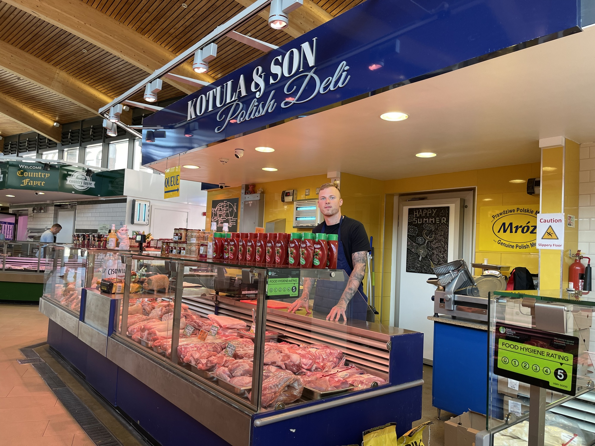

Sausages · Leicester Market Food Hall
Polish favourites.
Kiełbasy
Ask about Polish varieties at the counter.
Illustrative products and studio backdrop. Availability varies.
Leicester Market Food Hall
Polish favourites.
From the market.
Meats, cheeses and familiar flavours from the deli counter.
Explore the counter
From the Leicester Market directory. Check today’s products and prices with the stall.
For a taste
of something
familiar.
Kotula & Son Polish Deli, also known as Mróz Polski Sklep, is part of Leicester Market’s Food Hall.
Come with a favourite in mind, or ask at the counter. Start with the product families below and prepare the details of your enquiry.
Speak to the stall · 07739 709241At the deli counter
What’s on
your list?
Choose what you’d like to ask about. Staff must confirm current products, weights, availability and prices.
Meet us at the market
Find the
Polish deli.
Kotula & Son Polish DeliLeicester Market Food Hall
Market Place, Leicester07739 709241
Check opening details with the stall before travelling.
A question
for the counter?
Phone or visit the existing Facebook page to discuss products, quantities and collection or delivery.
Visit our Facebook page ↗News from
the counter.
Deli updates and product news.